AquaPet
System.
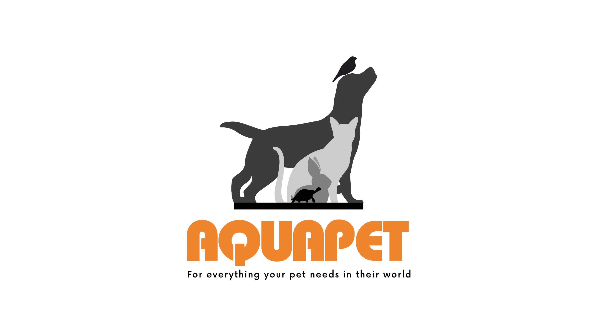
01. Executive Summary
Versatile Modernity.
AquaPet, a premier pet store in Kenya, sought a fresh and modern logo to better represent their expanding brand. I engineered a versatile identity system that reflects the diverse range of pets they cater to, resulting in significantly improved brand recognition and customer engagement across the Kenyan market.
02. Context
Situational Awareness
The pet retail market in Kenya is becoming increasingly competitive. AquaPet needed a visual identity that resonated with a modern audience while clearly communicating that they are a one-stop-shop for all types of pet owners, from enthusiasts to first-time pet parents.
03. The Core Problem
Problem Definition
The original logo was visually outdated and literal. It failed to communicate the diverse range of pets the store accommodates and lacked the "modern edge" required for retail authority. The challenge was to create a mark that was both visually appealing and highly versatile across multiple mediums.
04. Constraints
Risk & Trade-offs
The identity system had to be easily reproducible on everything from storefront signage to small product labels and uniforms. We had to balance the need for a "vibrant" feel with the practical requirements of cost-effective retail branding and digital scalability.
05. Objectives
Success Criteria
Deliver a modern, versatile logo that accurately represents AquaPet’s brand values. Success was defined by a measurable uplift in brand recognition, positive customer feedback, and the seamless integration of the mark across all physical and digital touchpoints.
06. Strategy & Thinking
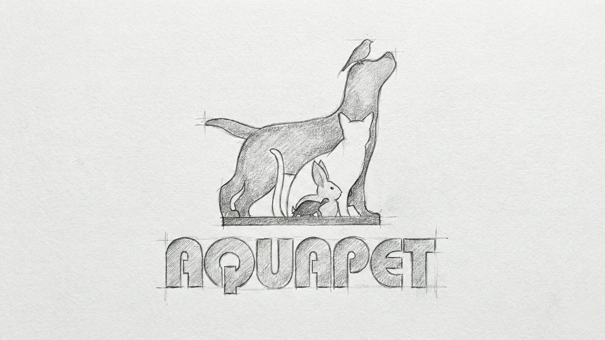
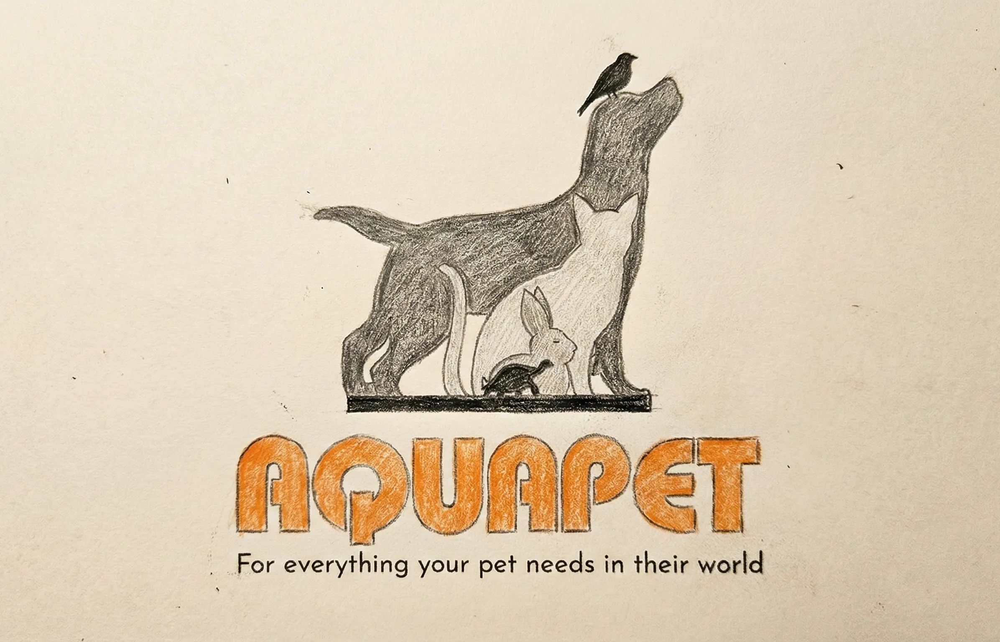
07. Design Decisions
Modern Diversity.
Selection of bold, approachable typography was paired with a vibrant but controlled palette to appeal to a broad demographic. The final concept was chosen for its ability to effectively communicate the brand's message of diverse care and modern convenience, maintaining its visual integrity across all platforms.
System Architecture
Brand Kit.
AaBb
Outfit Sans (Modern Retail)
// Fully Custom Typeface: Hand-crafted and digitized directly from original conceptual sketches to ensure a completely unique brand identity.
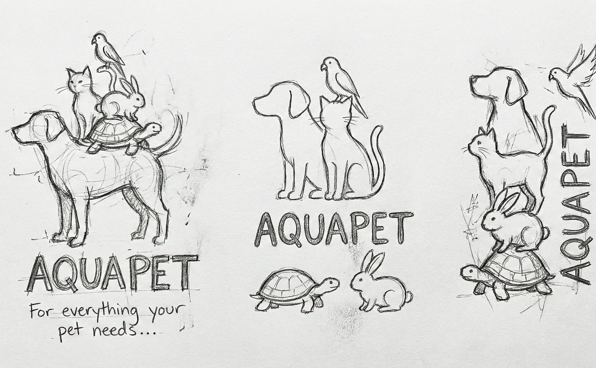
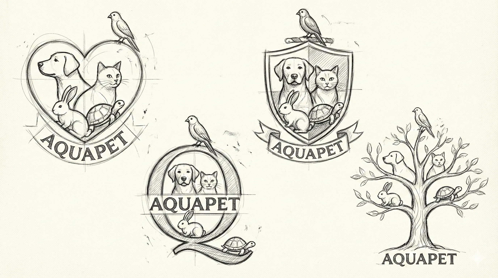
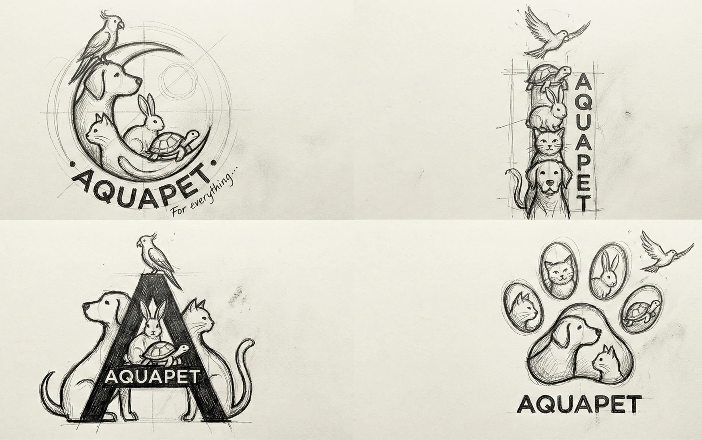
08. Execution & Deliverables
Proof of Completion
Delivered a polished final logo in multiple formats (horizontal, vertical, and icon), a comprehensive retail brand guide, and vector-ready assets for storefront and uniform production.
09. Outcome & Impact
Was It Worth It?
The rebrand significantly improved brand recognition and customer appeal. The versatility of the new mark allowed for a consistent experience across physical and digital platforms, reinforcing AquaPet's position as a modern market leader in Kenya.
10. Reflection & Learning
Maturity Signal
This project highlighed the importance of visual flexibility in retail. My role as Identity Designer was to balance a "friendly" pet-focused aesthetic with the "sharp" professionalism required for commercial authority—a predictable result for a high-growth retail brand.
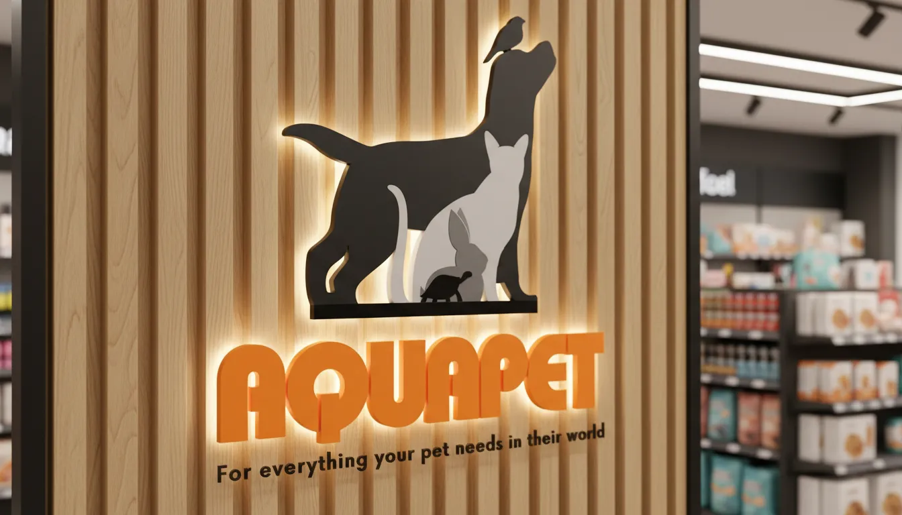
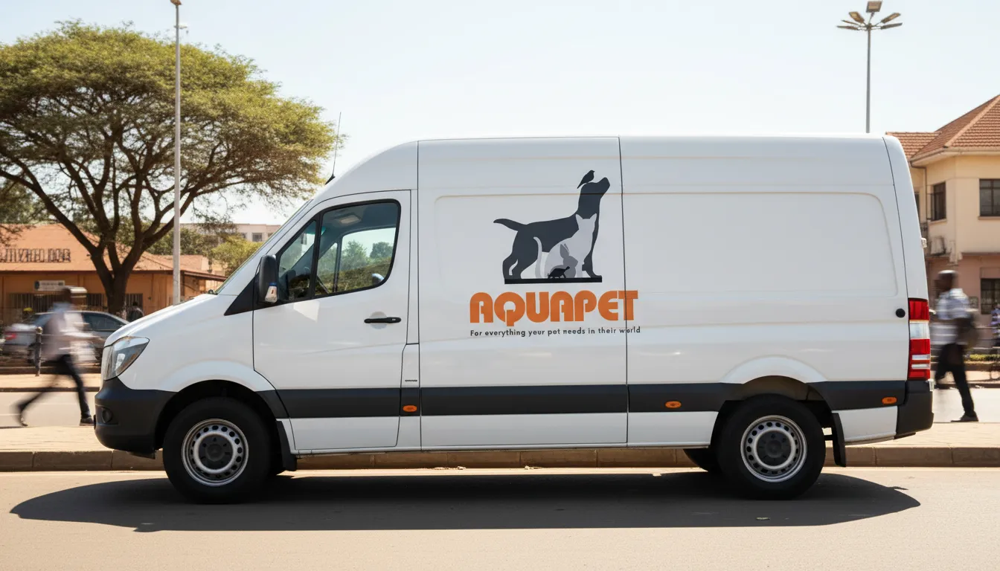
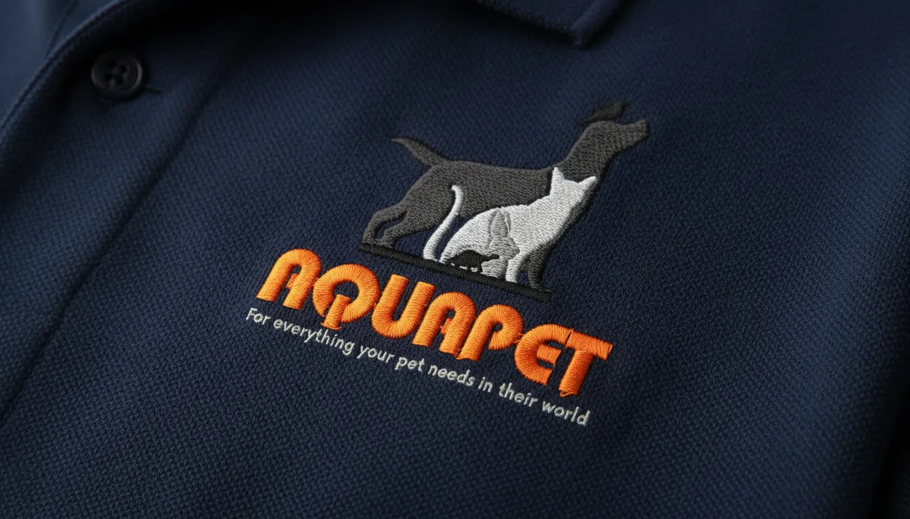
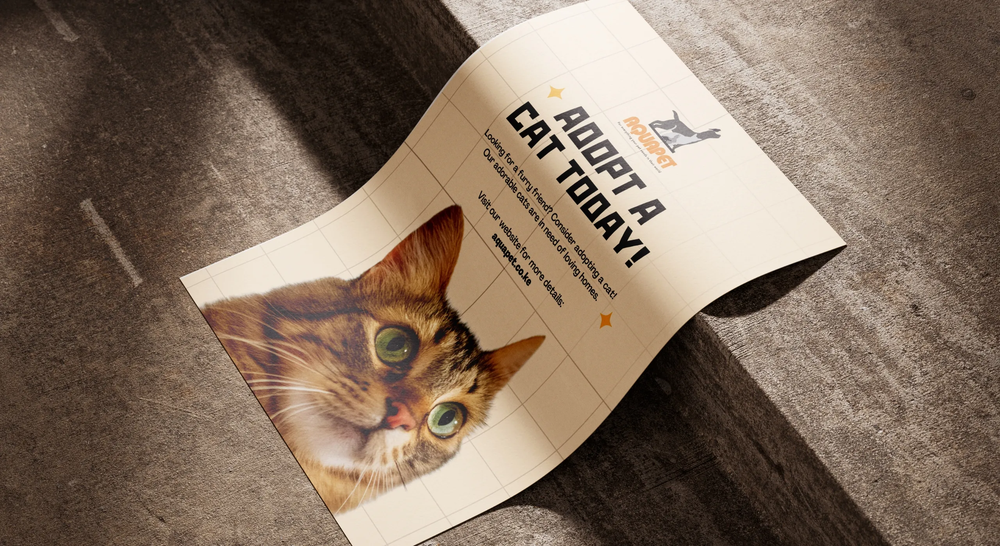
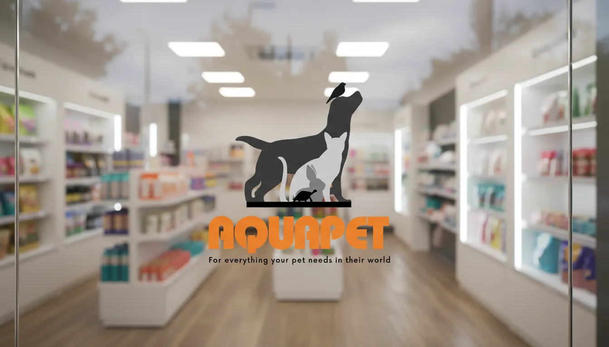
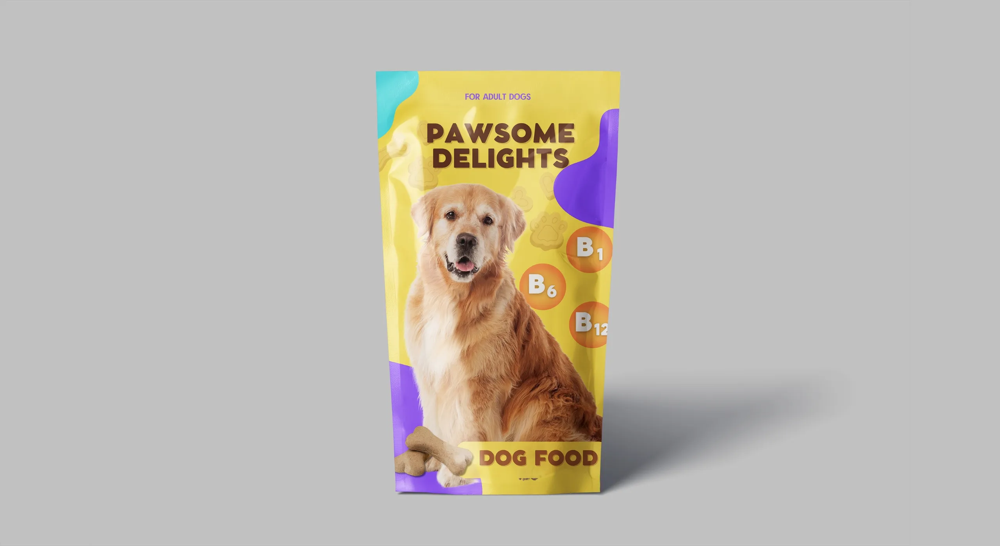
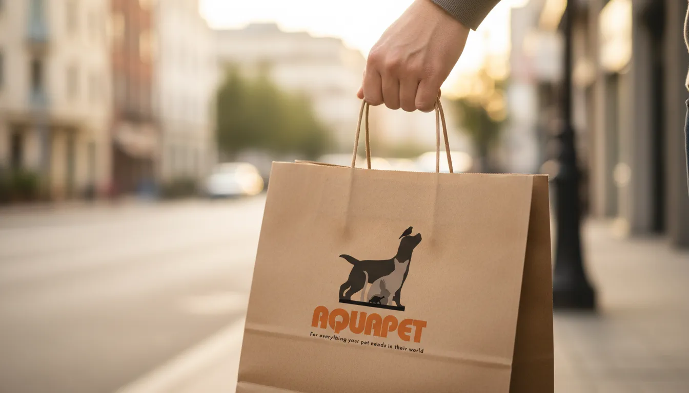
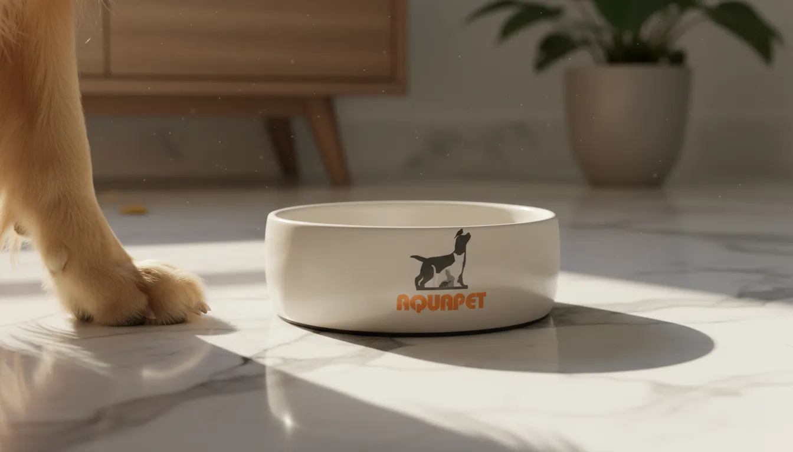
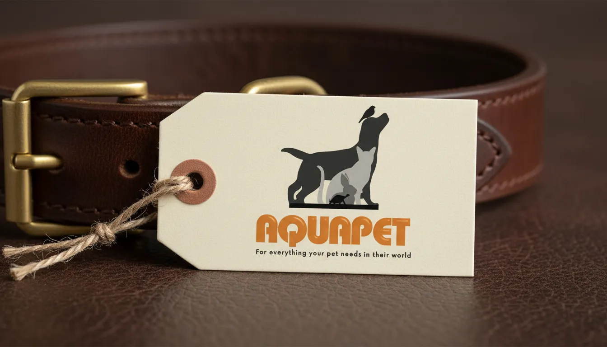